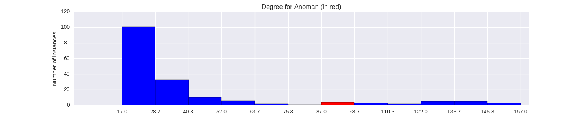

Quantiative Wayang Dictionary
Anoman

Terms of address: Resi
Type: Animal
Origin: India
Notes on the Sanskrit version: Known as Hanuman in Ramayana, his name means "broken chin". He is believed to have broken his chin as he tried to "eat" the Sun as he mistook it for a fruit. He is the son of Vayu (Lord of the Wind) and the foster son of Kesari, who served under the monkey King Sugriva's army force. His mother's name is Anjana.
Alternative names: Maruti, Anjaniputra, Bayudara, Bausiwi, Guruputra Handayapati, Yudawisama, Kapiwara, Mayangkara, Haruta, Palwagaseta, Prabancana, Ramandayapati, Sanggana, Senggana, Suwiyuswa
Description in the Javanese version: A monkey from the Ramayana cycle that becomes a hermit sage in his older days. He becomes a source of advice for the Pandawa. Some sources have him as the son of Batara Guru. His death is described in the Madya cycle. He died defending Jayabaya (the grandson of [Parikesit]) against an attack by Kaladewa, from Selahuma. Kaladewa killed Anoman with a special weapon he obtained from Batari Durga.
Found in the follwing lakon (stories):
- Narayana_Kridha_Brata
- Semar_Boyong_(Wahyu_Katetreman)
- Wahyu_Topeng_Waja
- Semar_Mantu
- Wahyu_Makutharama
- Semar_mBangun_Kayangan
- Prabu_Bimasakti
- Wahyu_Kaprawiran
- Semar_Mantu_Alternative_Version
- Suksma_Langgeng
- Bandung_Nagasewu
- Wahyu_Cakraningrat
Family relationships
Mother: Anjani
Father: Bayu
Consorts: Urangrayung
Offspring: Trihangga
More information
Killed by: Kaladewa
Aji / Wahyu / Pusaka: Aji Sepiangin, Aji Pameling, Aji Mundri
Takes the shape of: Amonggati
Wanda: Naga, Barat, Racut, Cinde
Sources: Ensiklopedi Wayang Purwa, pp. 340-344; Mengenal Gambar Tokoh Wayang Purwa, p. 16; Sejarah Wayang Purwa, pp. 308-309
Network measurements for Anoman
| Measurement | Value | |
|---|---|---|
| Degree | 97.0 |  |
| Weighted Degree | 363.0 |  |
| Betweeness Centrality | 198.913174293 |  |
| Eigenvector Centrality | 0.730680901927 |  |
{kind=link}
Characters in the same adegan as Anoman
| Character | Link weight |
|---|---|
| Character | Link weight |